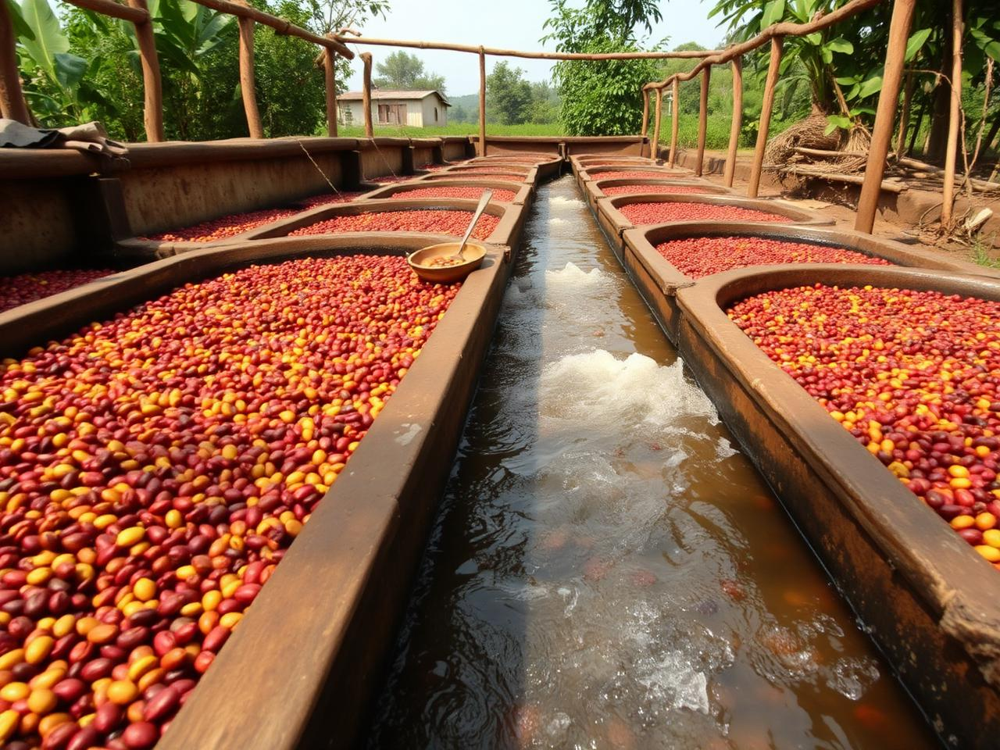
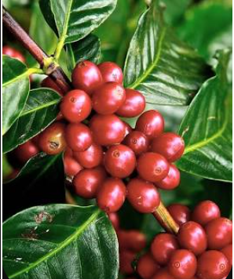
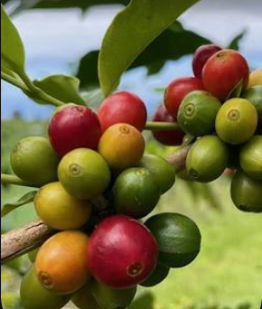
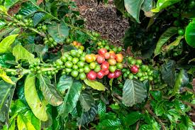
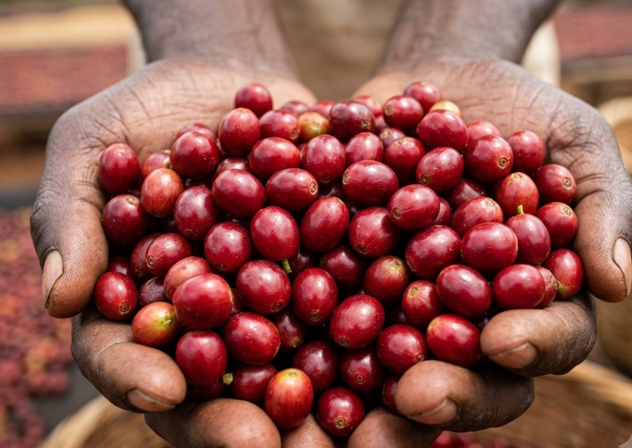

Transparency
Open and honest about pricing, sourcing, and every link in the chain.

Coffee is more than a commodity. It is a story of people, place, heritage and purpose — and at Savannah Bean, that story shapes everything we do.

Raised in Nandi County, surrounded by fertile highlands and generations of coffee farmers, our founder witnessed firsthand how agriculture creates livelihoods, strengthens communities and connects local producers to global markets.
After building experience in business development, international trade and market expansion, the founder returned to the coffee industry with a clear mission: to bridge the gap between global buyers and Kenya's exceptional coffee origins through transparency, trust and quality.
Today, Savannah Bean Coffee Ltd works closely with cooperatives, washing stations and farming communities to source and export premium Kenyan specialty coffee that reflects the character and integrity of its origin.
Open and honest about pricing, sourcing, and every link in the chain.
Long-term thinking that protects land, climate and farming communities.
Every lot can be followed back to its farm, washing station and harvest.
Fair partnerships that strengthen the people who grow the coffee.
When farmers, exporters and buyers thrive together, quality follows.

We don't just buy coffee — we work alongside the people who grow and process it. Our network spans farms, cooperatives and washing stations across Kenya's leading coffee regions.
Smallholders and estate producers committed to careful cultivation and selective picking.
Member-based societies that organise quality, training and shared infrastructure.
Skilled processing partners delivering Kenya's signature clean, layered cup profile.
Long-term partnerships across the Nandi, Kisii, Bungoma and Mt. Kenya growing regions.

Origin: Scott Labs, 1930s. Drought-resistant, ripens slowly at altitude.
Notes: Blackcurrant, citrus, juicy acidity, syrupy body.

Origin: Scott Labs, French Mission lineage. Thrives in high rainfall.
Notes: Bright acidity, stone fruit, balanced sweetness, refined finish.

Origin: Coffee Research Foundation Kenya, released 2010.
Notes: Clean cup, floral and citrus tones, vibrant brightness.

Origin: Ruiru, Kenya. Compact, high-yielding, disease-tolerant.
Notes: Smooth sweetness, medium body, gentle fruit acidity.
To take the richness of Kenya's highlands to the world — one cup at a time.Our Mission